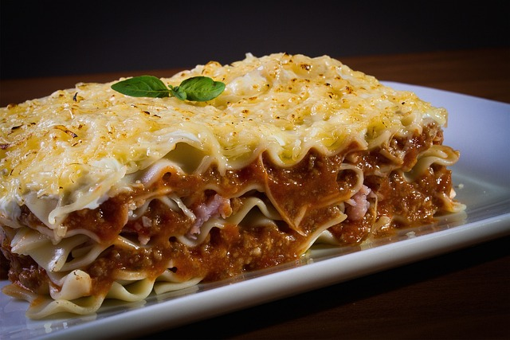

Vegan Lasagna Bolognese
Classic lasagna al forno with veggie bolognese and bechamel sauce.
Ingredients
- Olive Oil
- Red Wine
- Vegan Mince
- Vegetables
- Tomatoes

Steps
- Cook the bolognese sauce
- Cook the bechamel
- Layer the lasagna
- Enjoy
Cook the vegan ground beef according to package, add vegetables and everyhint saucy
Add all ingredients for the bechamel sauce in a pan and cook it.
Start with a thin layer of sauce on the bottom. Then alternate between pasta sheet, bolognese and bechamel. Finish with a layer of bechaml and add the vegan cheese